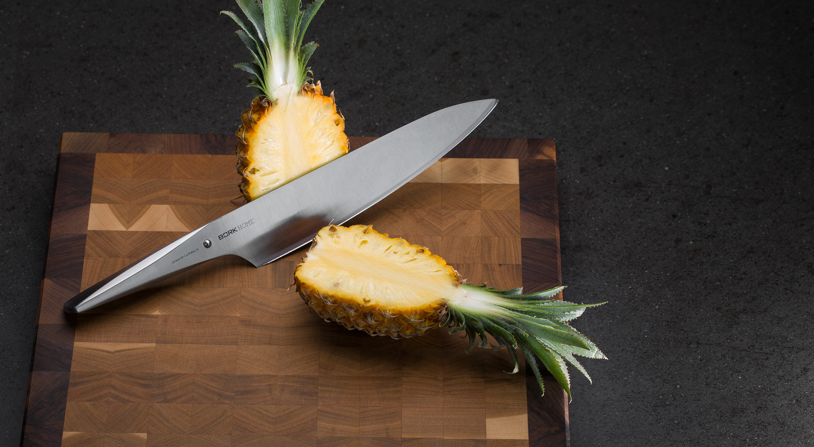
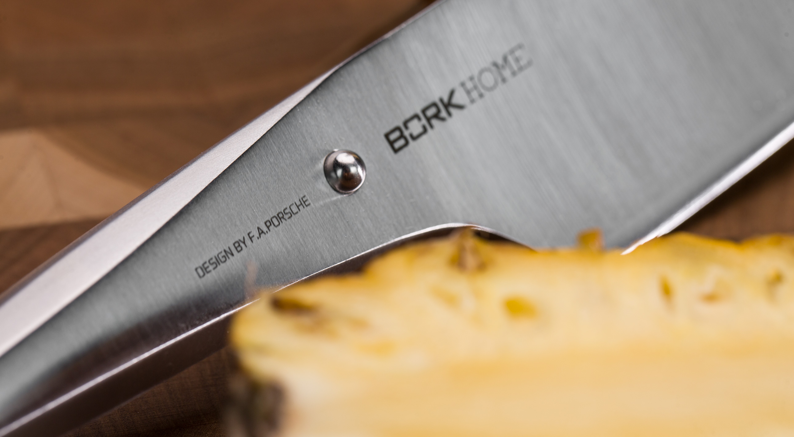

Шеф-нож BORK HN501
Нож шеф-повара — нож многоцелевого использования. Форма его клинка позволяет раскачивать нож на разделочной доске и достигать точных разрезов. Основное предназначение
- шинковка овощей
- нарезка мяса
Обух можно использовать для разбивания панциря крабов и отбивания мяса, а боковую сторону для раздавливания чеснока.
Нож прекрасно ложится в руку и имеет качественный баланс, это позволяет работать таким ножом на протяжении долгого времени с минимальной нагрузкой на кисть.

Кухонный шеф-нож длиной 24 см. создан без единого шва для гарантии гигиеничного и максимально комфортного использования.
Благодаря специальному способу затачивания изделие дольше остается острым.
Шеф-нож BORK HN501 полностью изготовлен из японской высококачественной нержавеющей стали AISI 301.
Дизайн ножа выполнен студией Porsche Design.
Серия ножей была разработана вместе с топ-шеф- поварами из разных стран. Дизайн ножа основан на методах работы профессиональных поваров, которые часто используют свои ножи под разными углами резки.
Ручка и лезвие полностью сливаются друг с другом, образуя единое целое. Только шарик из нержавеющей стали сигнализирует о разделении, а также является упором для указательного и большого пальцев.
Необычный дизайн в сочетании с продуманной эргономикой делает ножи BORK уникальным дополнением вашей кухни и признанным инструментом более чем 200 шеф-поваров Германии.